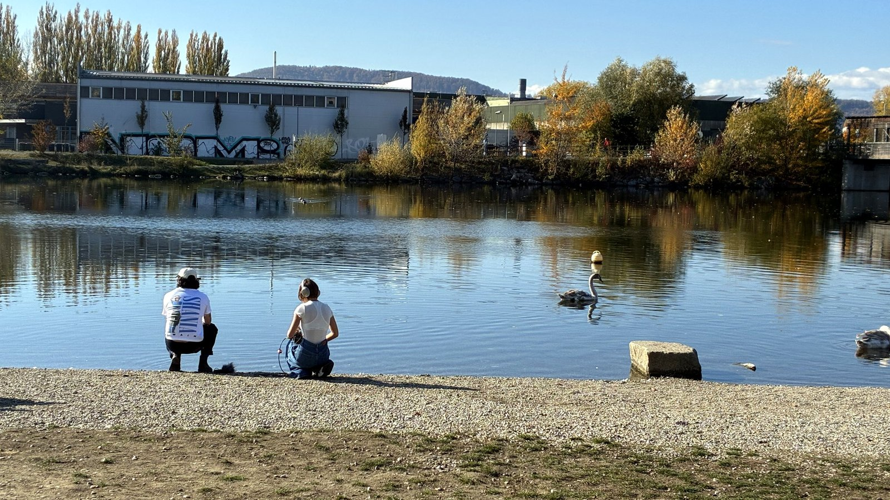

This course explored field recording as both a technical practice and an artistic method of listening, inquiry and composition. Theoretical readings on soundscape, situated listening and fieldwork were combined with hands-on exercises: conventional stereo recording, alternative ways of listening through water, solid surfaces, the ground and ultrasound, and different durations, from short takes to durational and trap recordings. The course culminates in an individual digital EP of field recordings by each student.
Field Recording & Creative Recording
FH JOANNEUM Graz, WS 2026/27
